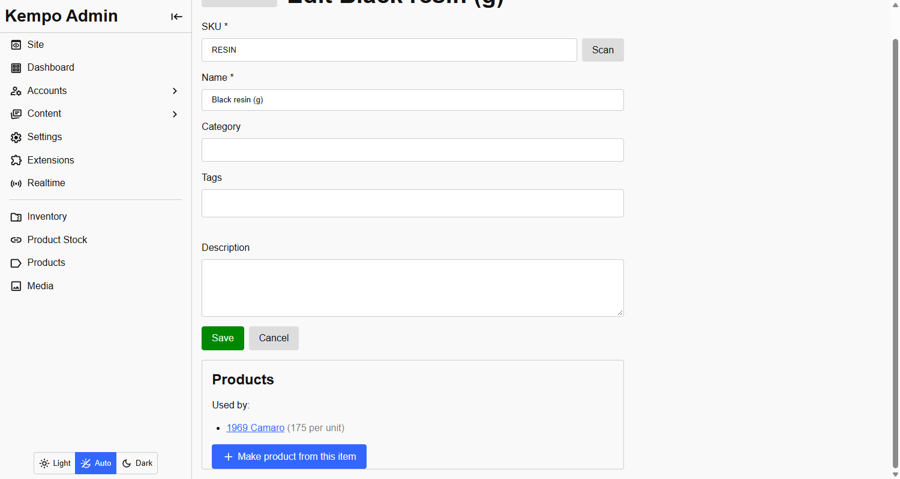

Made from
The Made from tab
Open a product in Products. The Made from tab, next to Details, Description, Media and Options, lists the inventory items one unit of the product uses up. Add a row for each material, pick the inventory item, and enter how much one unit uses. Saving the product saves the links.
 A product with four materials. Black resin and TPU are always used; the paint depends on the colour chosen.
A product with four materials. Black resin and TPU are always used; the paint depends on the colour chosen.
Only people with products:update and kempo-inventory:items:read can link materials. A product with no materials is untouched: its stock stays whatever you set, and selling it takes nothing from inventory.
Only with one choice
A material can apply always, or only when one choice of an option is selected. A model car with a Color option can use red paint for Red and blue paint for Blue, and the resin for every colour.
 The Color option the paint rows above refer to. Options are set up in kempo-products.
The Color option the paint rows above refer to. Options are set up in kempo-products.
- When a purchase is recorded, only the materials that match the choices bought are taken.
- A choice is marked sold out when there is not enough of the materials it needs for one more, even if other colours are fine.
- A link to a choice must name an option and a choice that exist on the product, or saving is refused.
Units
Inventory counts whole numbers with no unit. Pick the smallest sensible unit and keep every material in it: 175 g, not 0.175 kg; 20 ml, not 0.02 l. The amount per unit is also a whole number.
Make a product from an item
For a piece you already made, open the item in the inventory admin and choose Make product from this item.

The panel under an inventory item's form.The new product form opens with the name filled in and the item already listed as its material, one for one, so the product's stock is the item's quantity. Fill in the price and the rest, and save. This panel exists because kempo-inventory lets another extension add to its item page; see Adding to the item page.
Stock is managed for you
A product made from inventory is marked as maintained by this extension. Its stock, and which choices are in stock, show as read-only in the products admin, so an edit there cannot be silently overwritten by the next recalculation.
To change such a product's stock, change the inventory it is made from. To take it back by hand, remove its materials and the product returns to normal stock handling.
kempo-products-inventory is open source under the MIT license. View it on GitHub, or report a problem.